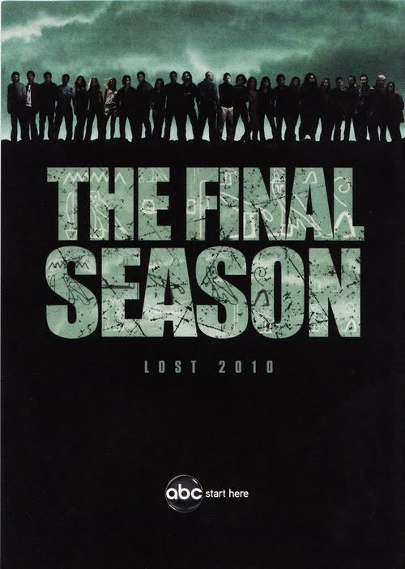

I can’t believe there isn’t one of these threads already
Lost, the mind blowing riddle of a group of survivors stranded on a mysterious island with polar bears, smoke monsters and mysterious hatches, is coming to an end this year, and there’s less than a month to go before the final season begins. What have been your favorite highlights throughout the past five years? Who has been your favorite character? Have you any clue how this show will a) begin its sixth season and b) end? And have you enjoyed the ride?
For me my favorite highlight will always be Hurley, the Dharma van and his rescue mission at the end of season three, makes me smile every time, and my favorite character would be Mikhail, but he was only in it for a season, so I’ll say Ben
As for season 6 I haven’t a clue, but here are some clues to consider
[align=center][/align]
A new promotional pic recently released, I personally think with the way they are postioned, those on the right will be the “white” (Jacobs) side and those on the left being the “black” (BSG) side, with Sayid the Judas amongst the BSG camp, but isn’t it intresting that would be almost similar to the last Lost split in season 4
The hieroglyphics mean who is the leader, writen once in white and then again in black
- BSG stands for Black Shirt Guy, the one we saw at the start of the season 5 finale


![[align=center][/align]](https://cinematicallycorrect.files.wordpress.com/2009/10/lostfinalseasonposter.jpg){kind=link}